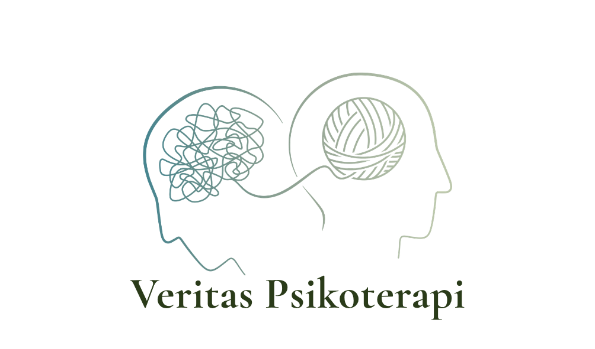
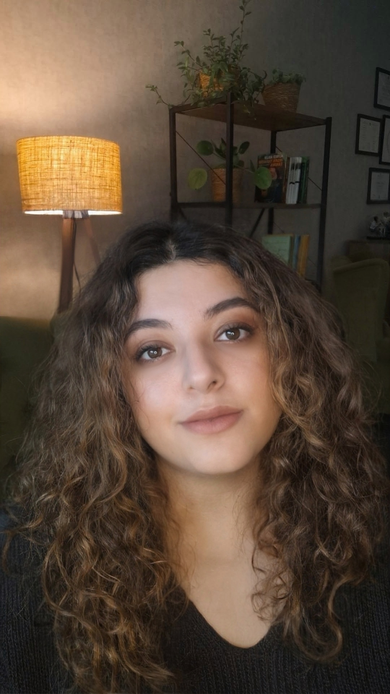

Psikanalitik psikoterapi, tekrar eden ilişki örüntülerini, duygusal güçlükleri ve kişinin kendisiyle kurduğu ilişkiyi anlamaya yönelik derinlemesine bir çalışma alanı sunar.

Merhaba, ben Deniz Köroğlu. Klinik Psikolog ve Psikoterapist olarak Ankara Çankaya'da yetişkin bireyler ve çiftler ile yüz yüze ve çevrim içi psikoterapi süreçleri yürütmekteyim.
Çankaya Üniversitesi Psikoloji bölümünden Siyaset Bilimi ve Uluslararası İlişkiler yan dalıyla mezun oldum. Psikoloji eğitimimin yanı sıra Anadolu Üniversitesi Sosyoloji bölümünü tamamladım. Ardından Başkent Üniversitesi Klinik Psikoloji yüksek lisans programını “Narsisistik Yaralanmanın Yorumlayıcı Fenomenolojik Analizi” başlıklı tezim ile tamamladım.
Çankaya Üniversitesi Psikoloji bölümünde öğrenci araştırma görevlisi olarak çalıştım. Çeşitli akademik gruplarda araştırmacı psikolog olarak bulundum. DAAD bursu ile Berlin Uluslararası Psikanalitik Üniversitesi’nde ve Niš Üniversitesi'nde sosyal travma üzerine yaz okullarına katıldım. Akademik çalışmalarımı Avrupa Psikoloji Kongresi gibi uluslararası platformlarda sundum. Başkent Üniversitesi Stres Yönetimi Uygulama ve Araştırma Merkezi'nde süpervizyon altında psikolojik değerlendirme ve psikoterapi süreçleri yürüttüm. Başkent Üniversitesi Kriz ve Travma Araştırmaları Laboratuvarı'nda, TÜBİTAK destekli "Aile Sisteminde Travmanın Deneyimleme ve Aktarım Biçimlerinin İncelenmesi" projesinde araştırmacı psikolog olarak çalıştım.
İspanya'da bulunan Montessori Kinder Barcelona eğitim merkezi ve Gülhane Eğitim ve Araştırma Hastanesi Psikiyatri kliniğinde stajlarımı tamamladım. Türk Psikologlar Derneği bünyesinde pandemi, doğal afet ve deprem sahalarında gönüllü çalışmalara katıldım. ODTÜ Psikanalitik Track bünyesindeki Müzikoanaliz Psikanaliz ve Müzik Çalışma Grubu'nda müzisyen ve araştırmacı olarak yer alıyor, sanatın ve müziğin ruhsallığa izdüşümlerini psikanalizle inceliyorum.
Klinik pratiğim, aldığım eğitimler ve süpervizyonlar doğrultusunda psikanalitik yaklaşım üzerine şekillenmiştir. Akademik bilgi birikimimi ve klinik pratiğimi birleştirerek, kurucusu olduğum Veritas Psikoterapi'de kendilik ve özdeğer süreçleri, tekrar eden ilişkisel döngüler, yaratıcılık ve performansla ilişkili zorluklar, kayıp, yas ve travma temaları üzerine yetişkinlerle ve çiftlerle çalışmaktayım.
Yetişkinlerle, haftada minimum bir seans olmak üzere planlanan ve psikanalitik bir çerçevede yürütülen yüz yüze ya da çevrim içi sürdürülebilir psikoterapi sürecidir. Süreçte hangi temalar üzerine çalıştığımı aşağıda bulabilirsiniz.
İlişkide tekrar eden çatışmaları, iletişim kopukluklarını ve karşılanmayan duygusal ihtiyaçları birlikte anlamaya yönelik bir terapi sürecidir. Amaç, kimin haklı olduğunu bulmak değil, çiftin aynı döngüye tekrar tekrar nasıl girdiğini birlikte görebilmesi ve birbirini daha açık duyabilmesidir.
Ankara dışında veya yurt dışında yaşayanlar için, güvenli platformlar üzerinden yürütülen psikoterapi sürecidir. Dünyanın farklı ülkelerindeki Türkçe düşünen ve konuşan bireylerle göç, aidiyet, kültürel geçişler ve uzakta kalmanın getirdiği kayıplar üzerine de çalışmaktayım.
Tekrarlayan ilişki döngüleri — aynı çatışmanın farklı kişilerle yeniden kurulması, yakınlaşma ve uzaklaşma arasında sıkışma.
İçsel çatışmalar — istediğiyle yapabildiği arasında kalma, kendine karşı sertlik, karar verememe.
Kendilik ve özdeğer süreçleri — kendini yetersiz, sahte ya da görünmez hissetme, eleştiriye aşırı duyarlılık, onay arayışı.
Kaygı ve zorlantılar — sürekli tetikte olma hali, bedende gerginlik ve uykunun bozulması, tekrarlayan düşünce ve ritüeller.
Depresyon ve isteksizlik — anlam kaybı, çekilme, uzun süren düşük ruh hali.
Kayıp ve yas — ölüm, ayrılık ya da adı konmamış kayıplar.
Travmatik yaşantılar — tekil olaylar ve süregiden örselenmeler.
Göç, aidiyet ve kültürel geçişler — uzakta olmanın getirdiği kopukluk ve kayıplar.
Yaratıcılık ve performans — sahne kaygısı, üretememe, kendini ortaya koymanın zorluğu.
Seans odasını ve psikoterapiyi, kişinin kendi gerçeğiyle yargılanmadan karşılaşabileceği, kapsayıcı ve güvenli bir alan olarak görüyorum. Terapi sürecinde acele etmeden, anlamlı ya da anlamsız ayırt etmeksizin sözcüklere dökülenleri danışanımla birlikte duymayı ve düşünmeyi önemsiyorum.
Görünür ve görünmeyen yaralarla, kayıplarla ve ilişkilerle çalışmak için güvenli bir alan açıyor, kişilerin kendilerini ve ilişkilerini daha yakından ve derinden görmelerine, yaşadıkları tekrarların arka planını anlamlandırmalarına eşlik ediyorum.
Bu sebeple klinik deneyimimi seans odasında psikanalitik bir çerçeveyle birleştirmeyi tercih ediyorum. Semptom, onu üreten ruhsal yapı anlaşılmadan susturulduğunda, başka bir biçimde geri dönebildiği için semptomu ortadan kaldırmak yerine onun ne söylediğini duyabilecek bir ruhsal alan yaratmayı ve bu anlamda derinleşmeyi önemsiyorum.
Bilgi ve randevu almak için bana e-posta, telefon ya da WhatsApp üzerinden ulaşabilirsiniz.